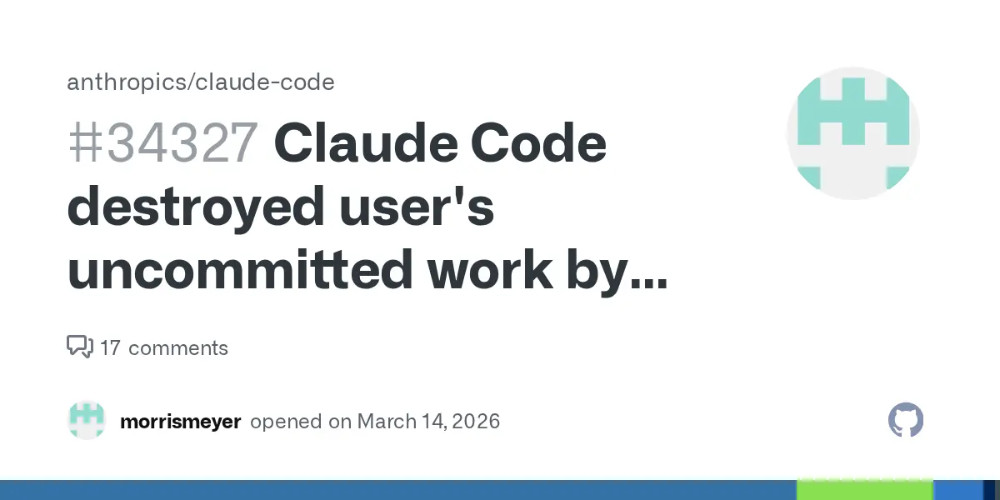
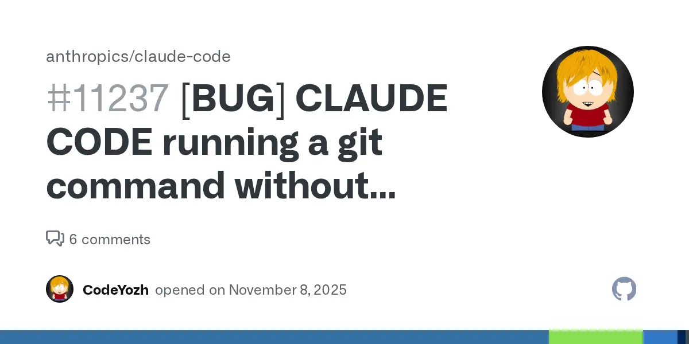

INC-01 · not an attack
The agent's own destructive
Confirmed · real victims
The agent's own destructive git
- Mechanism
- Unprompted
git reset --hard origin/mainat session startup;git checkout <file>without a prompt - Counted loss
- 12 unpushed commits + uncommitted work, on two consecutive days [2]; separately, 4 days of work [3]
- Recovery
- Reflog only, and only for objects that were already committed
- Disposition
- Reports closed as not planned; a third issue shows the destructive command chosen over a safe one for a rollback request [4]
Evidence
"Claude Code destroyed user's uncommitted work by running
git reset --hard on session startup — TWICE." This is the most-realized harm in the whole file, and it isn't an adversary. It is Anthropic's own category 1 and 2: overeager behaviour and honest mistakes [1].